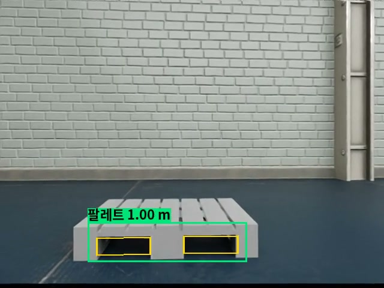
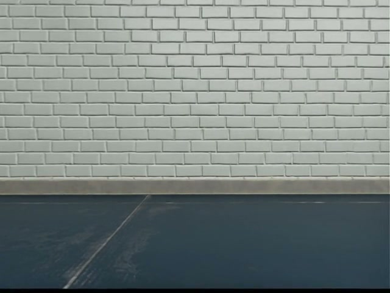
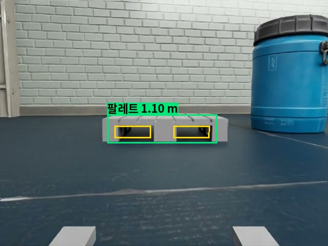
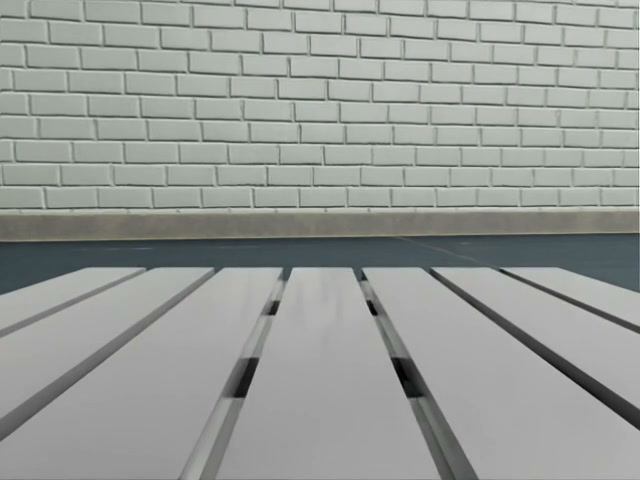

| 항목 | 값 | 근거 |
|---|---|---|
| 차체 외형 · 무게 | 1.46 × 0.63 × 1.01 m · 24 kg | 규격·사양 제조사 카탈로그 · 실측으로도 같음 확인 |
| 축간 거리 · 바퀴 반지름 | 0.64 m · 0.135 m | 실측 있음 실측 0.66 m · 0.125 m (이번 실행은 사진 추정값) |
| 팔레트 | EPAL 6 · 800 × 600 × 144 mm · 10 kg | 규격·사양 표준 규격 · 실물 무게 9–10 kg (차체 적재 한계 10 kg) |
| 위치 추정 LiDAR | 1,600빔 · 10 Hz · 0.2–12 m | 규격·사양 RPLIDAR A2M12 카탈로그 |
| 장애물 LiDAR 높이 | 0.08 m 두 대 (+ 1.05 m) | 시험으로 선택 배치 후보 비교 시험으로 선택 |
| 카메라 | 640 × 480 · 화각 69° | 규격·사양 D435i 컬러 화각 · 깊이 잡음은 데이터시트 식 |
| 바퀴 · 팔레트 마찰 | 정지 0.8 · 운동 0.7 | 가정 고무–콘크리트 일반 범위 (약 0.6–0.9) 안의 값 |
| 구동 토크 | 바퀴당 3 N·m (네 바퀴) | 가정 적재 34 kg을 0.3 m/s²로 가속하는 힘의 약 9배 |
| 운반 속도 | 0.3 m/s | 가정 카탈로그 최고 5 km/h (1.4 m/s)의 약 1/5 |
| 센서 잡음 | 바퀴 0.2 rad/s · 조향 0.005 rad · 거리 2 cm | 가정 사양 전이라 작게 가정 · 꺼도 결과 거의 같음 |




회전할 때 계산보다 실제로 덜 돈 비율
팔레트를 싣고 돌 때 덜 돎 (바퀴 옆 미끄러짐으로 추정) → 방향 오차가 쌓임
평면 높이별 · 평면에 걸치는 바닥 장애물 비율 (점: 물건 배치가 다른 공장)
위에서 본 배치 (시뮬레이션 차체 모델)
| 이번 주 확인 | 다음 단계 | |
|---|---|---|
| SLAM 위치로 임무 완주 · 장애물은 정답 지도 | → | LiDAR 격자만으로 계획한 임무를 여러 장면에서 반복 |
| 새 장애물 감지·재계획 · 본 장애물 기억 시연 | → | 후진 경로·하역 목적지·센서 끊김 상황까지 반복 확인 |
| 포켓 안이 비었는지 보는 확인은 끄고 시연 | → | 확인을 켜도 삽입이 멈추지 않도록 보완 |
| EPAL 6 팔레트 | → | T11 팔레트 |